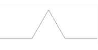
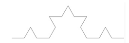
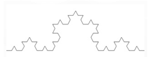

Definition:
A Koch curve is a fractal curve that can be constructed by taking a straight line segment and replacing it with a pattern of multiple line segments.
Then the line segments in that pattern are replaced by the same pattern.
Construction:
The Koch curve can be constructed by starting with an equilateral triangle, then recursively altering each line segment as follows:
- Divide the line segment into three segments of equal length.
- Draw an equilateral triangle that has the middle segment as its base and points outward.

- Remove the line segment that is the base of the triangle.

- After one iteration of this process, the resulting shape is the outline of a hexagram.

- The Koch snowflake is the limit approached as the above steps are followed over and over again.
- The Koch curve originally described by Koch is constructed with only one of the three sides of the original triangle.
- In other words, three Koch curves make a Koch snowflake.